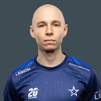
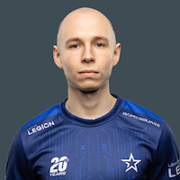

Top 3 Best Teams:
1. Faze Clan


2. Team Vitality


3. Mousesports


 

When I first started following CSGO, I came across Stewie2K. Stewie2K was known as the 'Smoke Criminal' because he had tendencies to run through smoke grenades (which is usually frowned upon due to the fact that you don't know what's on the other side). Instantly trying to replicate his playstyle, I found myself following him around. He was already a legend in Cloud9 where he made a clutch kill to win Katowice. As he joined Team Liquid, I came across Elige, NAF, nitro, and Twistz (who actually made an appearance on this page!). Watching them under the covers when I was supposed to be asleep, I had spent countless nights following this team. They were entertaining, innovative, skillful, and lastly, extremely good at what they did. They won the Intel Grand Slam, and were known to be one of the best teams to ever touch the game.